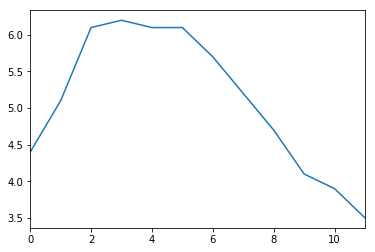
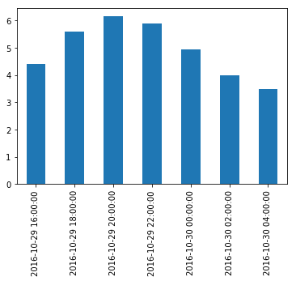
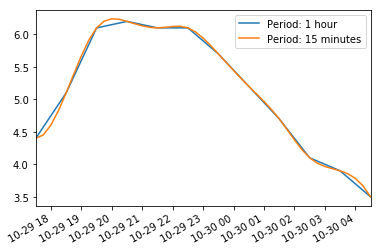
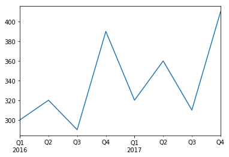

Pandas
The pandas library provides high-performance, easy-to-use data structures and data analysis tools. The main data structure is the DataFrame, which you can think of as an in-memory 2D table (like a spreadsheet, with column names and row labels). Many features available in Excel are available programmatically, such as creating pivot tables, computing columns based on other columns, plotting graphs, etc. You can also group rows by column value, or join tables much like in SQL. Pandas is also great at handling time series.
Prerequisites:
- NumPy – if you are not familiar with NumPy, we recommend that you go through the NumPy tutorial now.
Setup
First, let's import pandas. People usually import it as pd:
import pandas as pd
Series objects
The pandas library contains these useful data structures:
-
Seriesobjects, that we will discuss now. ASeriesobject is 1D array, similar to a column in a spreadsheet (with a column name and row labels). -
DataFrameobjects. This is a 2D table, similar to a spreadsheet (with column names and row labels). -
Panelobjects. You can see aPanelas a dictionary ofDataFrames. These are less used, so we will not discuss them here.
Creating a Series
Let's start by creating our first Series object!
s = pd.Series([2,-1,3,5])
s
Output
0 2
1 -1
2 3
3 5
dtype: int64
Similar to a 1D ndarray
Series objects behave much like one-dimensional NumPy ndarrays, and you can often pass them as parameters to NumPy functions:
import numpy as np
np.exp(s)
Output
0 7.389056
1 0.367879
2 20.085537
3 148.413159
dtype: float64
Arithmetic operations on Series are also possible, and they apply elementwise, just like for ndarrays:
s + [1000,2000,3000,4000]
Output
0 1002
1 1999
2 3003
3 4005
dtype: int64
Similar to NumPy, if you add a single number to a Series, that number is added to all items in the Series. This is called * broadcasting*:
s + 1000
Output
0 1002
1 999
2 1003
3 1005
dtype: int64
The same is true for all binary operations such as * or /, and even conditional operations:
s < 0
Output
0 False
1 True
2 False
3 False
dtype: bool
Index labels
Each item in a Series object has a unique identifier called the index label. By default, it is simply the rank of the item in the Series (starting at 0) but you can also set the index labels manually:
s2 = pd.Series([68, 83, 112, 68], index=["alice", "bob", "charles", "darwin"])
s2
Output
alice 68
bob 83
charles 112
darwin 68
dtype: int64
You can then use the Series just like a dict:
s2["bob"]
Output
83
You can still access the items by integer location, like in a regular array:
s2[1]
Output
83
To make it clear when you are accessing by label or by integer location, it is recommended to always use the loc attribute when accessing by label, and the iloc attribute when accessing by integer location:
s2.loc["bob"]
Output
83
s2.iloc[1]
Output
83
Slicing a Series also slices the index labels:
s2.iloc[1:3]
Output
bob 83
charles 112
dtype: int64
This can lead to unexpected results when using the default numeric labels, so be careful:
surprise = pd.Series([1000, 1001, 1002, 1003])
surprise
Output
0 1000
1 1001
2 1002
3 1003
dtype: int64
surprise_slice = surprise[2:]
surprise_slice
Output
2 1002
3 1003
dtype: int64
Oh look! The first element has index label 2. The element with index label 0 is absent from the slice:
try:
surprise_slice[0]
except KeyError as e:
print("Key error:", e)
Output
Key error: 0
But remember that you can access elements by integer location using the iloc attribute. This illustrates another reason why it's always better to use loc and iloc to access Series objects:
surprise_slice.iloc[0]
Output
1002
Init from dict
You can create a Series object from a dict. The keys will be used as index labels:
weights = {"alice": 68, "bob": 83, "colin": 86, "darwin": 68}
s3 = pd.Series(weights)
s3
Output
alice 68
bob 83
colin 86
darwin 68
dtype: int64
You can control which elements you want to include in the Series and in what order by explicitly specifying the desired index:
s4 = pd.Series(weights, index = ["colin", "alice"])
s4
Output
colin 86
alice 68
dtype: int64
Automatic alignment
When an operation involves multiple Series objects, pandas automatically aligns items by matching index labels.
print(s2.keys())
print(s3.keys())
s2 + s3
Output
Index(['alice', 'bob', 'charles', 'darwin'], dtype='object')
Index(['alice', 'bob', 'colin', 'darwin'], dtype='object')
alice 136.0
bob 166.0
charles NaN
colin NaN
darwin 136.0
dtype: float64
The resulting Series contains the union of index labels from s2 and s3. Since "colin" is missing from s2 and "charles" is missing from s3, these items have a NaN result value. (ie. Not-a-Number means missing).
Automatic alignment is very handy when working with data that may come from various sources with varying structure and missing items. But if you forget to set the right index labels, you can have surprising results:
s5 = pd.Series([1000,1000,1000,1000])
print("s2 =", s2.values)
print("s5 =", s5.values)
s2 + s5
Output
s2 = [ 68 83 112 68]
s5 = [1000 1000 1000 1000]
alice NaN
bob NaN
charles NaN
darwin NaN
0 NaN
1 NaN
2 NaN
3 NaN
dtype: float64
Pandas could not align the Series, since their labels do not match at all, hence the full NaN result.
Init with a scalar
You can also initialize a Series object using a scalar and a list of index labels: all items will be set to the scalar.
meaning = pd.Series(42, ["life", "universe", "everything"])
meaning
Output
life 42
universe 42
everything 42
dtype: int64
Series name
A Series can have a name:
s6 = pd.Series([83, 68], index=["bob", "alice"], name="weights")
s6
Output
bob 83
alice 68
Name: weights, dtype: int64
Plotting a Series
Pandas makes it easy to plot Series data using matplotlib (for more details on matplotlib, check out the matplotlib tutorial). Just import matplotlib and call the plot() method:
%matplotlib inline
import matplotlib.pyplot as plt
temperatures = [4.4,5.1,6.1,6.2,6.1,6.1,5.7,5.2,4.7,4.1,3.9,3.5]
s7 = pd.Series(temperatures, name="Temperature")
s7.plot()
plt.show()
Output

There are many options for plotting your data. It is not necessary to list them all here: if you need a particular type of plot (histograms, pie charts, etc.), just look for it in the excellent Visualization section of pandas' documentation, and look at the example code.
Handling time
Many datasets have timestamps, and pandas is awesome at manipulating such data:
-
it can represent periods (such as 2016Q3) and frequencies (such as "monthly"),
-
it can convert periods to actual timestamps, and vice versa,
-
it can resample data and aggregate values any way you like,
-
it can handle timezones.
Time range
Let's start by creating a time series using pd.date_range(). This returns a DatetimeIndex containing one datetime per hour for 12 hours starting on October 29th 2016 at 5:30pm.
dates = pd.date_range('2016/10/29 5:30pm', periods=12, freq='H')
dates
Output
DatetimeIndex(['2016-10-29 17:30:00', '2016-10-29 18:30:00',
'2016-10-29 19:30:00', '2016-10-29 20:30:00',
'2016-10-29 21:30:00', '2016-10-29 22:30:00',
'2016-10-29 23:30:00', '2016-10-30 00:30:00',
'2016-10-30 01:30:00', '2016-10-30 02:30:00',
'2016-10-30 03:30:00', '2016-10-30 04:30:00'],
dtype='datetime64[ns]', freq='H')
This DatetimeIndex may be used as an index in a Series:
temp_series = pd.Series(temperatures, dates)
temp_series
Output
2016-10-29 17:30:00 4.4
2016-10-29 18:30:00 5.1
2016-10-29 19:30:00 6.1
2016-10-29 20:30:00 6.2
2016-10-29 21:30:00 6.1
2016-10-29 22:30:00 6.1
2016-10-29 23:30:00 5.7
2016-10-30 00:30:00 5.2
2016-10-30 01:30:00 4.7
2016-10-30 02:30:00 4.1
2016-10-30 03:30:00 3.9
2016-10-30 04:30:00 3.5
Freq: H, dtype: float64
Let's plot this series:
temp_series.plot(kind="bar")
plt.grid(True)
plt.show()
Output

Resampling
Pandas lets us resample a time series very simply. Just call the resample() method and specify a new frequency:
temp_series_freq_2H = temp_series.resample("2H")
temp_series_freq_2H
Output
DatetimeIndexResampler [freq=<2 * Hours>, axis=0, closed=left, label=left, convention=start, base=0]
The resampling operation is actually a deferred operation, which is why we did not get a Series object, but a DatetimeIndexResampler object instead. To actually perform the resampling operation, we can simply call the mean() method: Pandas will compute the mean of every pair of consecutive hours:
temp_series_freq_2H = temp_series_freq_2H.mean()
Let's plot the result:
temp_series_freq_2H.plot(kind="bar")
plt.show()
Output

Note how the values have automatically been aggregated into 2-hour periods. If we look at the 6-8pm period, for example, we had a value of 5.1 at 6:30pm, and 6.1 at 7:30pm. After resampling, we just have one value of 5.6, which is the mean of 5.1 and 6.1. Rather than computing the mean, we could have used any other aggregation function, for example we can decide to keep the minimum value of each period:
temp_series_freq_2H = temp_series.resample("2H").min()
temp_series_freq_2H
Output
2016-10-29 16:00:00 4.4
2016-10-29 18:00:00 5.1
2016-10-29 20:00:00 6.1
2016-10-29 22:00:00 5.7
2016-10-30 00:00:00 4.7
2016-10-30 02:00:00 3.9
2016-10-30 04:00:00 3.5
Freq: 2H, dtype: float64
Or, equivalently, we could use the apply() method instead:
temp_series_freq_2H = temp_series.resample("2H").apply(np.min)
temp_series_freq_2H
Output
2016-10-29 16:00:00 4.4
2016-10-29 18:00:00 5.1
2016-10-29 20:00:00 6.1
2016-10-29 22:00:00 5.7
2016-10-30 00:00:00 4.7
2016-10-30 02:00:00 3.9
2016-10-30 04:00:00 3.5
Freq: 2H, dtype: float64
Upsampling and interpolation
This was an example of downsampling. We can also upsample (ie. increase the frequency), but this creates holes in our data:
temp_series_freq_15min = temp_series.resample("15Min").mean()
temp_series_freq_15min.head(n=10) # `head` displays the top n values
Output
2016-10-29 17:30:00 4.4
2016-10-29 17:45:00 NaN
2016-10-29 18:00:00 NaN
2016-10-29 18:15:00 NaN
2016-10-29 18:30:00 5.1
2016-10-29 18:45:00 NaN
2016-10-29 19:00:00 NaN
2016-10-29 19:15:00 NaN
2016-10-29 19:30:00 6.1
2016-10-29 19:45:00 NaN
Freq: 15T, dtype: float64
One solution is to fill the gaps by interpolating. We just call the interpolate() method. The default is to use linear interpolation, but we can also select another method, such as cubic interpolation:
temp_series_freq_15min = temp_series.resample("15Min").interpolate(method="cubic")
temp_series_freq_15min.head(n=10)
Output
2016-10-29 17:30:00 4.400000
2016-10-29 17:45:00 4.452911
2016-10-29 18:00:00 4.605113
2016-10-29 18:15:00 4.829758
2016-10-29 18:30:00 5.100000
2016-10-29 18:45:00 5.388992
2016-10-29 19:00:00 5.669887
2016-10-29 19:15:00 5.915839
2016-10-29 19:30:00 6.100000
2016-10-29 19:45:00 6.203621
Freq: 15T, dtype: float64
temp_series.plot(label="Period: 1 hour")
temp_series_freq_15min.plot(label="Period: 15 minutes")
plt.legend()
plt.show()
Output

Timezones
By default datetimes are naive: they are not aware of timezones, so 2016-10-30 02:30 might mean October 30th 2016 at 2:30am in Paris or in New York. We can make datetimes timezone aware by calling the tz_localize() method:
temp_series_ny = temp_series.tz_localize("America/New_York")
temp_series_ny
Output
2016-10-29 17:30:00-04:00 4.4
2016-10-29 18:30:00-04:00 5.1
2016-10-29 19:30:00-04:00 6.1
2016-10-29 20:30:00-04:00 6.2
2016-10-29 21:30:00-04:00 6.1
2016-10-29 22:30:00-04:00 6.1
2016-10-29 23:30:00-04:00 5.7
2016-10-30 00:30:00-04:00 5.2
2016-10-30 01:30:00-04:00 4.7
2016-10-30 02:30:00-04:00 4.1
2016-10-30 03:30:00-04:00 3.9
2016-10-30 04:30:00-04:00 3.5
Freq: H, dtype: float64
Note that -04:00 is now appended to all the datetimes. This means that these datetimes refer to UTC - 4 hours.
We can convert these datetimes to Paris time like this:
temp_series_paris = temp_series_ny.tz_convert("Europe/Paris")
temp_series_paris
Output
2016-10-29 23:30:00+02:00 4.4
2016-10-30 00:30:00+02:00 5.1
2016-10-30 01:30:00+02:00 6.1
2016-10-30 02:30:00+02:00 6.2
2016-10-30 02:30:00+01:00 6.1
2016-10-30 03:30:00+01:00 6.1
2016-10-30 04:30:00+01:00 5.7
2016-10-30 05:30:00+01:00 5.2
2016-10-30 06:30:00+01:00 4.7
2016-10-30 07:30:00+01:00 4.1
2016-10-30 08:30:00+01:00 3.9
2016-10-30 09:30:00+01:00 3.5
Freq: H, dtype: float64
You may have noticed that the UTC offset changes from +02:00 to +01:00: this is because France switches to winter time at 3am that particular night (time goes back to 2am). Notice that 2:30am occurs twice! Let's go back to a naive representation (if you log some data hourly using local time, without storing the timezone, you might get something like this):
temp_series_paris_naive = temp_series_paris.tz_localize(None)
temp_series_paris_naive
Output
2016-10-29 23:30:00 4.4
2016-10-30 00:30:00 5.1
2016-10-30 01:30:00 6.1
2016-10-30 02:30:00 6.2
2016-10-30 02:30:00 6.1
2016-10-30 03:30:00 6.1
2016-10-30 04:30:00 5.7
2016-10-30 05:30:00 5.2
2016-10-30 06:30:00 4.7
2016-10-30 07:30:00 4.1
2016-10-30 08:30:00 3.9
2016-10-30 09:30:00 3.5
Freq: H, dtype: float64
Now 02:30 is really ambiguous. If we try to localize these naive datetimes to the Paris timezone, we get an error:
try:
temp_series_paris_naive.tz_localize("Europe/Paris")
except Exception as e:
print(type(e))
print(e)
Output
<class 'pytz.exceptions.AmbiguousTimeError'>
Cannot infer dst time from Timestamp('2016-10-30 02:30:00'), try using the 'ambiguous' argument
Fortunately using the ambiguous argument we can tell pandas to infer the right DST (Daylight Saving Time) based on the order of the ambiguous timestamps:
temp_series_paris_naive.tz_localize("Europe/Paris", ambiguous="infer")
Output
2016-10-29 23:30:00+02:00 4.4
2016-10-30 00:30:00+02:00 5.1
2016-10-30 01:30:00+02:00 6.1
2016-10-30 02:30:00+02:00 6.2
2016-10-30 02:30:00+01:00 6.1
2016-10-30 03:30:00+01:00 6.1
2016-10-30 04:30:00+01:00 5.7
2016-10-30 05:30:00+01:00 5.2
2016-10-30 06:30:00+01:00 4.7
2016-10-30 07:30:00+01:00 4.1
2016-10-30 08:30:00+01:00 3.9
2016-10-30 09:30:00+01:00 3.5
Freq: H, dtype: float64
Periods
The pd.period_range() function returns a PeriodIndex instead of a DatetimeIndex. For example, let's get all quarters in 2016 and 2017:
quarters = pd.period_range('2016Q1', periods=8, freq='Q')
quarters
Output
PeriodIndex(['2016Q1', '2016Q2', '2016Q3', '2016Q4', '2017Q1', '2017Q2',
'2017Q3', '2017Q4'],
dtype='period[Q-DEC]', freq='Q-DEC')
Adding a number N to a PeriodIndex shifts the periods by N times the PeriodIndex's frequency:
quarters + 3
Output
PeriodIndex(['2016Q4', '2017Q1', '2017Q2', '2017Q3', '2017Q4', '2018Q1',
'2018Q2', '2018Q3'],
dtype='period[Q-DEC]', freq='Q-DEC')
The asfreq() method lets us change the frequency of the PeriodIndex. All periods are lengthened or shortened accordingly. For example, let's convert all the quarterly periods to monthly periods (zooming in):
quarters.asfreq("M")
Output
PeriodIndex(['2016-03', '2016-06', '2016-09', '2016-12', '2017-03', '2017-06',
'2017-09', '2017-12'],
dtype='period[M]', freq='M')
By default, the asfreq zooms on the end of each period. We can tell it to zoom on the start of each period instead:
quarters.asfreq("M", how="start")
Output
PeriodIndex(['2016-01', '2016-04', '2016-07', '2016-10', '2017-01', '2017-04',
'2017-07', '2017-10'],
dtype='period[M]', freq='M')
And we can zoom out:
quarters.asfreq("A")
Output
PeriodIndex(['2016', '2016', '2016', '2016', '2017', '2017', '2017', '2017'], dtype='period[A-DEC]', freq='A-DEC')
Of course we can create a Series with a PeriodIndex:
quarterly_revenue = pd.Series([300, 320, 290, 390, 320, 360, 310, 410], index = quarters)
quarterly_revenue
Output
2016Q1 300
2016Q2 320
2016Q3 290
2016Q4 390
2017Q1 320
2017Q2 360
2017Q3 310
2017Q4 410
Freq: Q-DEC, dtype: int64
quarterly_revenue.plot(kind="line")
plt.show()
Output

We can convert periods to timestamps by calling to_timestamp. By default this will give us the first day of each period, but by setting how and freq, we can get the last hour of each period:
last_hours = quarterly_revenue.to_timestamp(how="end", freq="H")
last_hours
Output
2016-03-31 23:00:00 300
2016-06-30 23:00:00 320
2016-09-30 23:00:00 290
2016-12-31 23:00:00 390
2017-03-31 23:00:00 320
2017-06-30 23:00:00 360
2017-09-30 23:00:00 310
2017-12-31 23:00:00 410
Freq: Q-DEC, dtype: int64
And back to periods by calling to_period:
last_hours.to_period()
Output
2016Q1 300
2016Q2 320
2016Q3 290
2016Q4 390
2017Q1 320
2017Q2 360
2017Q3 310
2017Q4 410
Freq: Q-DEC, dtype: int64
Pandas also provides many other time-related functions that we recommend you check out in the documentation. To whet your appetite, here is one way to get the last business day of each month in 2016, at 9am:
months_2016 = pd.period_range("2016", periods=12, freq="M")
one_day_after_last_days = months_2016.asfreq("D") + 1
last_bdays = one_day_after_last_days.to_timestamp() - pd.tseries.offsets.BDay()
last_bdays.to_period("H") + 9
Output
PeriodIndex(['2016-01-29 09:00', '2016-02-29 09:00', '2016-03-31 09:00',
'2016-04-29 09:00', '2016-05-31 09:00', '2016-06-30 09:00',
'2016-07-29 09:00', '2016-08-31 09:00', '2016-09-30 09:00',
'2016-10-31 09:00', '2016-11-30 09:00', '2016-12-30 09:00'],
dtype='period[H]', freq='H')
DataFrame objects
A DataFrame object represents a spreadsheet, with cell values, column names and row index labels. You can define expressions to compute columns based on other columns, create pivot-tables, group rows, draw graphs, etc. You can see DataFrames as dictionaries of Series.
Creating a DataFrame
You can create a DataFrame by passing a dictionary of Series objects:
people_dict = {
"weight": pd.Series([68, 83, 112], index=["alice", "bob", "charles"]),
"birthyear": pd.Series([1984, 1985, 1992], index=["bob", "alice", "charles"], name="year"),
"children": pd.Series([0, 3], index=["charles", "bob"]),
"hobby": pd.Series(["Biking", "Dancing"], index=["alice", "bob"]),
}
people = pd.DataFrame(people_dict)
people
Output
| birthyear | children | hobby | weight | |
|---|---|---|---|---|
| alice | 1985 | NaN | Biking | 68 |
| bob | 1984 | 3.0 | Dancing | 83 |
| charles | 1992 | 0.0 | NaN | 112 |
A few things to note:
-
the
Serieswere automatically aligned based on their index, -
missing values are represented as
NaN, -
Seriesnames are ignored (the name"year"was dropped), -
DataFrames are displayed nicely in Jupyter notebooks, woohoo!
You can access columns pretty much as you would expect. They are returned as Series objects:
people["birthyear"]
Output
alice 1985
bob 1984
charles 1992
Name: birthyear, dtype: int64
You can also get multiple columns at once:
people[["birthyear", "hobby"]]
Output
| birthyear | hobby | |
|---|---|---|
| alice | 1985 | Biking |
| bob | 1984 | Dancing |
| charles | 1992 | NaN |
If you pass a list of columns and/or index row labels to the DataFrame constructor, it will guarantee that these columns and/or rows will exist, in that order, and no other column/row will exist. For example:
d2 = pd.DataFrame(
people_dict,
columns=["birthyear", "weight", "height"],
index=["bob", "alice", "eugene"]
)
d2
Output
| birthyear | weight | weight | |
|---|---|---|---|
| bob | 1984.0 | 83.0 | NaN |
| alice | 1985.0 | 68.0 | NaN |
| eugene | NaN | NaN | NaN |
Another convenient way to create a DataFrame is to pass all the values to the constructor as an ndarray, or a list of lists, and specify the column names and row index labels separately:
values = [
[1985, np.nan, "Biking", 68],
[1984, 3, "Dancing", 83],
[1992, 0, np.nan, 112]
]
d3 = pd.DataFrame(
values,
columns=["birthyear", "children", "hobby", "weight"],
index=["alice", "bob", "charles"]
)
d3
Output
| birthyear | children | hobby | weight | |
|---|---|---|---|---|
| alice | 1985 | NaN | Biking | 68 |
| bob | 1984 | 3.0 | Dancing | 83 |
| charles | 1992 | 0.0 | NaN | 112 |
To specify missing values, you can either use np.nan or NumPy's masked arrays:
masked_array = np.ma.asarray(values, dtype=np.object)
masked_array[(0, 2), (1, 2)] = np.ma.masked
d3 = pd.DataFrame(
masked_array,
columns=["birthyear", "children", "hobby", "weight"],
index=["alice", "bob", "charles"]
)
d3
Output
| birthyear | children | hobby | weight | |
|---|---|---|---|---|
| alice | 1985 | NaN | Biking | 68 |
| bob | 1984 | 3 | Dancing | 83 |
| charles | 1992 | 0 | NaN | 112 |
Instead of an ndarray, you can also pass a DataFrame object:
d4 = pd.DataFrame(
d3,
columns=["hobby", "children"],
index=["alice", "bob"]
)
d4
Output
| hobby | children | |
|---|---|---|
| alice | Biking | NaN |
| bob | Dancing | 3 |
It is also possible to create a DataFrame with a dictionary (or list) of dictionaries (or list):
people = pd.DataFrame({
"birthyear": {"alice":1985, "bob": 1984, "charles": 1992},
"hobby": {"alice":"Biking", "bob": "Dancing"},
"weight": {"alice":68, "bob": 83, "charles": 112},
"children": {"bob": 3, "charles": 0}
})
people
Output
| birthyear | children | hobby | weight | |
|---|---|---|---|---|
| alice | 1985 | NaN | Biking | 68 |
| bob | 1984 | 3.0 | Dancing | 83 |
| charles | 1992 | 0.0 | NaN | 112 |
Multi-indexing
If all columns are tuples of the same size, then they are understood as a multi-index. The same goes for row index labels. For example:
d5 = pd.DataFrame(
{
("public", "birthyear"):
{("Paris","alice"):1985, ("Paris","bob"): 1984, ("London","charles"): 1992},
("public", "hobby"):
{("Paris","alice"):"Biking", ("Paris","bob"): "Dancing"},
("private", "weight"):
{("Paris","alice"):68, ("Paris","bob"): 83, ("London","charles"): 112},
("private", "children"):
{("Paris", "alice"):np.nan, ("Paris","bob"): 3, ("London","charles"): 0}
}
)
d5
You can now get a DataFrame containing all the "public" columns very simply:
d5["public"]
d5["public", "hobby"] # Same result as d5["public"]["hobby"]
Output
London charles NaN
Paris alice Biking
bob Dancing
Name: (public, hobby), dtype: object
Dropping a level
Let's look at d5 again:
d5
There are two levels of columns, and two levels of indices. We can drop a column level by calling droplevel() (the same goes for indices):
d5.columns = d5.columns.droplevel(level = 0)
d5
Transposing
You can swap columns and indices using the T attribute:
d6 = d5.T
d6
Stacking and unstacking levels
Calling the stack() method will push the lowest column level after the lowest index:
d7 = d6.stack()
d7
Note that many NaN values appeared. This makes sense because many new combinations did not exist before (eg. there was no bob in London).
Calling unstack() will do the reverse, once again creating many NaN values.
d8 = d7.unstack()
d8
If we call unstack again, we end up with a Series object:
d9 = d8.unstack()
d9
Output
London alice children None
weight NaN
birthyear NaN
hobby NaN
bob children NaN
weight NaN
birthyear NaN
hobby NaN
charles children 0
weight 112
birthyear 1992
hobby None
Paris alice children None
weight 68
birthyear 1985
hobby Biking
bob children 3
weight 83
birthyear 1984
hobby Dancing
charles children NaN
weight NaN
birthyear NaN
hobby None
dtype: object
The stack() and unstack() methods let you select the level to stack/unstack. You can even stack/unstack multiple levels at once:
d10 = d9.unstack(level = (0,1))
d10
Most methods return modified copies
As you may have noticed, the stack() and unstack() methods do not modify the object they apply to. Instead, they work on a copy and return that copy. This is true of most methods in pandas.
Accessing rows
Let's go back to the people DataFrame:
people
Output
| birthyear | children | hobby | weight | |
|---|---|---|---|---|
| alice | 1985 | NaN | Biking | 68 |
| bob | 1984 | 3.0 | Dancing | 83 |
| charles | 1992 | 0.0 | NaN | 112 |
The loc attribute lets you access rows instead of columns. The result is a Series object in which the DataFrame's column names are mapped to row index labels:
people.loc["charles"]
Output
birthyear 1992
children 0
hobby NaN
weight 112
Name: charles, dtype: object
You can also access rows by integer location using the iloc attribute:
people.iloc[2]
Output
birthyear 1992
children 0
hobby NaN
weight 112
Name: charles, dtype: object
You can also get a slice of rows, and this returns a DataFrame object:
people.iloc[1:3]
Output
| birthyear | children | hobby | weight | |
|---|---|---|---|---|
| bob | 1984 | 3.0 | Dancing | 83 |
| charles | 1992 | 0.0 | NaN | 112 |
Finally, you can pass a boolean array to get the matching rows:
people[np.array([True, False, True])]
Output
| birthyear | children | hobby | weight | |
|---|---|---|---|---|
| alice | 1985 | NaN | Biking | 68 |
| charles | 1992 | 0.0 | NaN | 112 |
This is most useful when combined with boolean expressions:
people[people["birthyear"] < 1990]
Output
| birthyear | children | hobby | weight | |
|---|---|---|---|---|
| alice | 1985 | NaN | Biking | 68 |
| bob | 1984 | 3.0 | Dancing | 83 |
Adding and removing columns
You can generally treat DataFrame objects like dictionaries of Series, so the following work fine:
people
Output
| birthyear | children | hobby | weight | |
|---|---|---|---|---|
| alice | 1985 | NaN | Biking | 68 |
| bob | 1984 | 3.0 | Dancing | 83 |
| charles | 1992 | 0.0 | NaN | 112 |
people["age"] = 2018 - people["birthyear"] # adds a new column "age"
people["over 30"] = people["age"] > 30 # adds another column "over 30"
birthyears = people.pop("birthyear")
del people["children"]
people
Output
| hobby | weight | age | over 30 | |
|---|---|---|---|---|
| alice | Biking | 68 | 33 | True |
| bob | Dancing | 83 | 34 | True |
| charles | NaN | 112 | 26 | False |
birthyears
Output
alice 1985
bob 1984
charles 1992
Name: birthyear, dtype: int64
When you add a new colum, it must have the same number of rows. Missing rows are filled with NaN, and extra rows are ignored:
people["pets"] = pd.Series({"bob": 0, "charles": 5, "eugene":1}) # alice is missing, eugene is ignored
people
Output
| hobby | weight | age | over 30 | pets | |
|---|---|---|---|---|---|
| alice | Biking | 68 | 33 | True | NaN |
| bob | Dancing | 83 | 34 | True | 0.0 |
| charles | NaN | 112 | 26 | False | 5.0 |
When adding a new column, it is added at the end (on the right) by default. You can also insert a column anywhere else using the insert() method:
people.insert(1, "height", [172, 181, 185])
people
Output
| hobby | height | weight | age | over 30 | pets | |
|---|---|---|---|---|---|---|
| alice | Biking | 172 | 68 | 33 | True | NaN |
| bob | Dancing | 181 | 83 | 34 | True | 0.0 |
| charles | NaN | 185 | 112 | 26 | False | 5.0 |
Assigning new columns
You can also create new columns by calling the assign() method. Note that this returns a new DataFrame object, the original is not modified:
people.assign(
body_mass_index = people["weight"] / (people["height"] / 100) ** 2,
has_pets = people["pets"] > 0
)
try:
people.assign(
body_mass_index = people["weight"] / (people["height"] / 100) ** 2,
overweight = people["body_mass_index"] > 25
)
except KeyError as e:
print("Key error:", e)
Output
Key error: 'body_mass_index'
The solution is to split this assignment in two consecutive assignments:
d6 = people.assign(body_mass_index = people["weight"] / (people["height"] / 100) ** 2)
d6.assign(overweight = d6["body_mass_index"] > 25)
Having to create a temporary variable d6 is not very convenient. You may want to just chain the assigment calls, but it does not work because the people object is not actually modified by the first assignment:
try:
(people
.assign(body_mass_index = people["weight"] / (people["height"] / 100) ** 2)
.assign(overweight = people["body_mass_index"] > 25)
)
except KeyError as e:
print("Key error:", e)
Output
Key error: 'body_mass_index'
But fear not, there is a simple solution. You can pass a function to the assign() method (typically a lambda function), and this function will be called with the DataFrame as a parameter:
(people
.assign(body_mass_index = lambda df: df["weight"] / (df["height"] / 100) ** 2)
.assign(overweight = lambda df: df["body_mass_index"] > 25)
)
Problem solved!
Evaluating an expression
A great feature supported by pandas is expression evaluation. This relies on the numexpr library which must be installed.
people.eval("weight / (height/100) ** 2 > 25")
Output
alice False
bob True
charles True
dtype: bool
Assignment expressions are also supported. Let's set inplace=True to directly modify the DataFrame rather than getting a modified copy:
people.eval("body_mass_index = weight / (height/100) ** 2", inplace=True)
people
You can use a local or global variable in an expression by prefixing it with '@':
overweight_threshold = 30
people.eval("overweight = body_mass_index > @overweight_threshold", inplace=True)
people
Querying a DataFrame
The query() method lets you filter a DataFrame based on a query expression:
people.query("age > 30 and pets == 0")
Sorting a DataFrame
You can sort a DataFrame by calling its sort_index method. By default it sorts the rows by their index label, in ascending order, but let's reverse the order:
people.sort_index(ascending=False)
Note that sort_index returned a sorted copy of the DataFrame. To modify people directly, we can set the inplace argument to True. Also, we can sort the columns instead of the rows by setting axis=1:
people.sort_index(axis=1, inplace=True)
people
To sort the DataFrame by the values instead of the labels, we can use sort_values and specify the column to sort by:
people.sort_values(by="age", inplace=True)
people
Plotting a DataFrame
Just like for Series, pandas makes it easy to draw nice graphs based on a DataFrame.
For example, it is trivial to create a line plot from a DataFrame's data by calling its plot method:
people.plot(kind = "line", x = "body_mass_index", y = ["height", "weight"])
plt.show()
Output

You can pass extra arguments supported by matplotlib's functions. For example, we can create scatterplot and pass it a list of sizes using the s argument of matplotlib's scatter() function:
people.plot(kind = "scatter", x = "height", y = "weight", s=[40, 120, 200])
plt.show()
Output

Again, there are way too many options to list here: the best option is to scroll through the Visualization page in pandas' documentation, find the plot you are interested in and look at the example code.